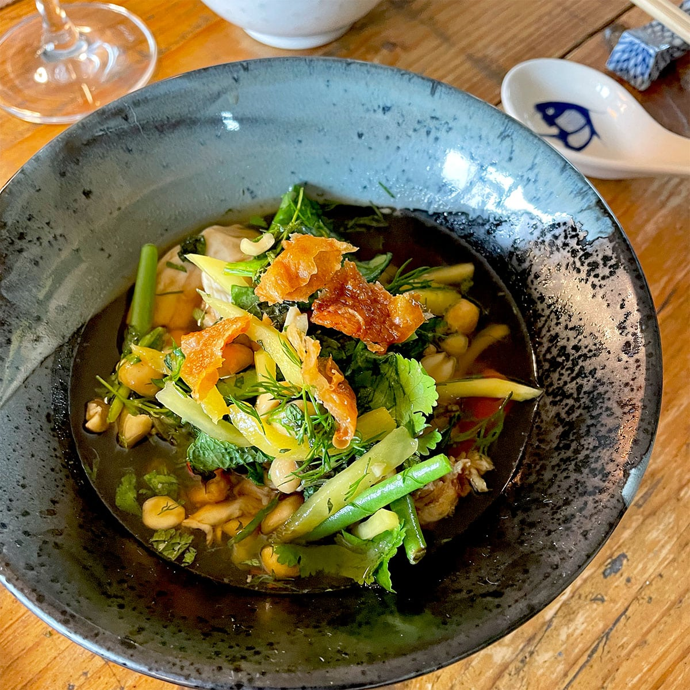

Drunk Chicken

Description
This is a beautiful traditional Japanese dish with loads of flavor.
Wonderfully convenient, simple in its ingredients, short cook time, and
loaded with flavor. Read on for the details!
Ingredients
- 700 ml shaoxing wine
- 250 ml mirin
- 250 ml water
- 40g jaggery/palm sugar
- 5 cm ginger sliced
- 3 skin on chicken breast fillets (approx 250g)
Instructions
- Remove skin from chicken, carefully scrape any excess fat from the underside of the skin and place onto on a lined tray. Sprinkle with salt and cover with baking paper then another tray. Bake in oven until crispy, check after 20 minutes, may need a little longer. Break into shards and set aside.
- In a large saucepan add the shaoxing wine, mirin, water, jaggery and ginger. Bring to the boil. Add chicken breasts then remove from heat. Cover with a lid and allow to poach for 20 minutes.
- When cool to touch, shred chicken breasts, reserving the poaching liquid.